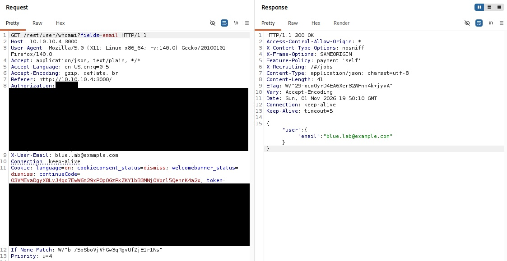
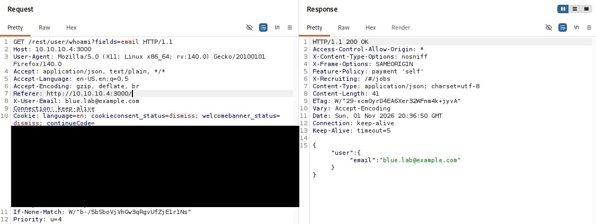
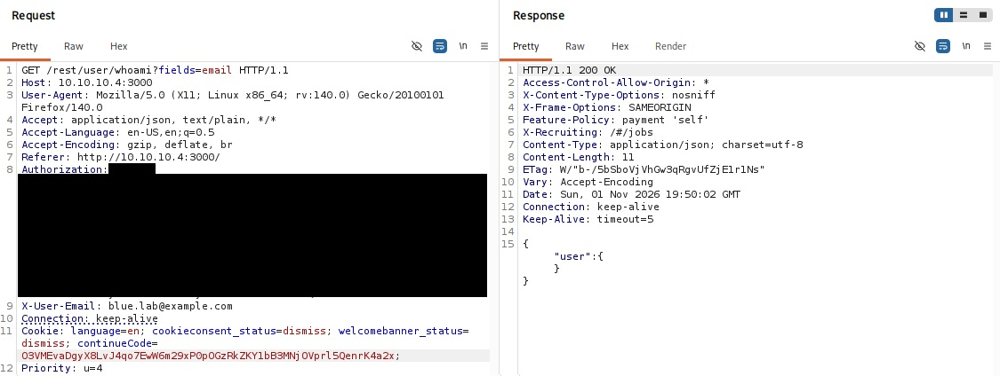

TARGET APPLICATION
OWASP Juice Shop
Web ApplicationPROJECT DIRECTORY / 001 WEB APPLICATION SECURITY
WEB APPLICATION SECURITY ASSESSMENT
Vulnerability Analysis · Access Control · SQL Injection
SECURITY
ASSESSMENT
01 / PROJECT OVERVIEW
OWASP Juice Shop을 대상으로 웹 애플리케이션의 인증, 접근 제어 및 입력값 검증 영역을 분석했습니다.
테스트 환경에서 취약점을 재현하고, 발생 원인과 보안 영향을 분석했습니다. SQL Injection 항목은 개선 후 재검증까지 수행했습니다.
본 프로젝트는 개인 가상 실습 환경에서 진행한 보안 분석 및 학습 프로젝트입니다.
02 / SCOPE & ENVIRONMENT
OWASP Juice Shop
Web ApplicationUbuntu / VirtualBox
Local Lab EnvironmentDocker
Juice Shop ContainerBurp Suite
HTTP Request / ResponseAll testing was performed within a personally controlled local virtual lab environment. No external systems were targeted.
03 / METHODOLOGY
애플리케이션 구조와 HTTP 요청 및 응답 흐름 확인
인증, 접근 제어 및 입력값 처리 방식 분석
테스트 계정과 요청값을 활용한 취약점 재현
SQL Injection 수정 후 동일 유형의 입력값 재검증
04 / VULNERABILITY ANALYSIS
Three assessment areas examined during the project.
Authentication & Session Handling
사용자 인증 상태에 따른 API 응답을 비교하고, Authorization 및 Cookie 전달 여부에 따른 동작 차이를 확인했습니다.
테스트한 조건에서 인증 우회는 확인되지 않았습니다. 인증 관련 전체 보안성이 보장된다는 의미는 아닙니다.
Broken Object Level Authorization
서로 다른 두 사용자 계정을 생성하고 계정별 Basket ID를 확인했습니다. 이후 B 계정으로 A 계정의 Basket에 접근을 시도했습니다.
B 계정에서 A 계정의 Basket ID인 7에 접근했으며, 응답에서 UserId 25가 확인되었습니다. 다른 사용자 소유 객체에 접근할 수 있음을 재현했습니다.
GET /rest/basket/7
OBSERVED RESPONSE
HTTP 200 OK / UserId: 25
개선 방안을 검토했으나 실제 소스 수정 및 재검증은 수행하지 않았습니다.
Improper SQL Query Construction
로그인 API의 입력값이 SQL 쿼리에 삽입되는 방식을 확인했습니다. 입력값에 SQL 구문을 포함해 인증 처리 결과를 테스트했습니다.
수정 전 테스트에서 SQL Injection을 통한 비정상적인 로그인 성공을 재현했습니다. 이후 파라미터 바인딩 방식으로 쿼리를 개선했습니다.
POST /rest/user/login
TEST PAYLOAD
blue.lab@example.com' OR '1'='1
문자열 결합 방식의 SQL 쿼리를 Sequelize replacements를 사용하는 파라미터 바인딩 방식으로 변경했습니다.
models.sequelize.query(
"SELECT * FROM Users
WHERE email = :email
AND password = :password
AND deletedAt IS NULL",
{
replacements: {
email: req.body.email || "",
password: security.hash(
req.body.password || ""
)
},
model: UserModel,
plain: true
}
);05 / REMEDIATION & RETESTING
SQL 쿼리의 파라미터 바인딩 적용 후 정상 및 비정상 로그인 시나리오를 재검증했습니다.
객체 소유권 검증과 서버 측 접근 제어 강화를 개선 방향으로 제안합니다. 실제 수정 및 재검증은 진행하지 않았습니다.
06 / EVIDENCE & DOCUMENTATION
Practical records and supporting materials.

Figure 01. 정상 인증 요청 및 응답 확인
Figure 02. Authorization 헤더 제거 테스트
Figure 03. Cookie 토큰 제거 테스트정상 인증 및 Authorization, Cookie 제거 테스트 결과
계정 간 Basket 접근 및 다른 사용자 소유 데이터 노출 검증
수정 전 로그인 테스트 및 SQL Injection 재현 증거
파라미터 바인딩 적용 후 SQL Injection 차단 및 정상 인증 재검증
Evidence collected during authorized local lab testing. Sensitive authentication values have been excluded from public documentation.
07 / CONCLUSION
이번 프로젝트를 통해 웹 애플리케이션의 인증, 접근 제어 및 SQL 쿼리 처리 방식을 분석했습니다.
BOLA 취약점 재현과 SQL Injection 개선 및 재검증을 수행하면서 단순한 취약점 발견뿐 아니라 원인 분석과 대응 검증의 중요성을 확인했습니다.
테스트 범위와 검증 결과를 명확히 구분하고, 실제 수행한 내용과 추가 개선이 필요한 영역을 기록하는 것을 중요하게 생각합니다.
RED TEAM / SECURITY RESEARCH